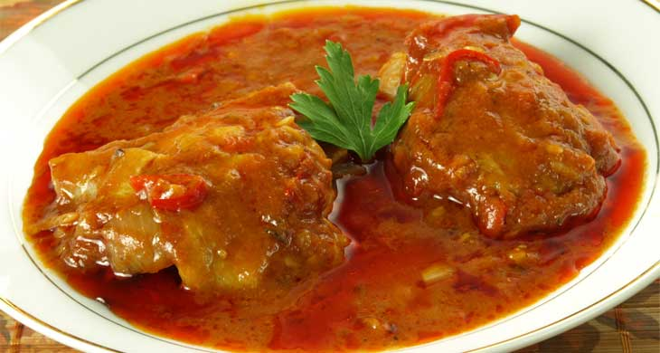

Ingredients:
1)700gms / 11/2 lb white fish fillet
2)2 medium Onions
3)4 cloves garlic (paste)
4)1 tbsp ginger (paste)
5)4 tbsp tomato puree
6)2/3rd cup water
7)Salt To Taste
8)1/2 cup ghee
Spices :
1)1tsp white cumin seeds
2)1tsp turmeric powder
3)1tsp garam masala powder
How to make curry fish:
1)Cut the fish into medium-sized pieces.
2)Heat the ghee in a frying pan and fry the fish pieces gently for 5 minutes. Drain the fish on absorbent kitchen paper and set aside.
3)Chop one onion finely and grind the other one.
4)Add the chopped onion to the ghee in the pan and fry until golden.
5)Add all spices and cook stirring for 10 seconds.
6)Now add the grinded onion, garlic, ginger and tomato puree. Fry the mixture until the ghee starts to separate.
7)Add the water and salt. Bring the mixture to the boil. Add fried fish pieces. Reduce the heat and simmer for about 10 minutes.
8)Serve the indian fish curry hot with rice or roti.